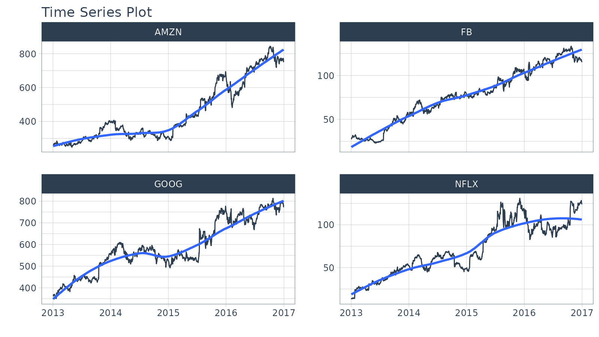
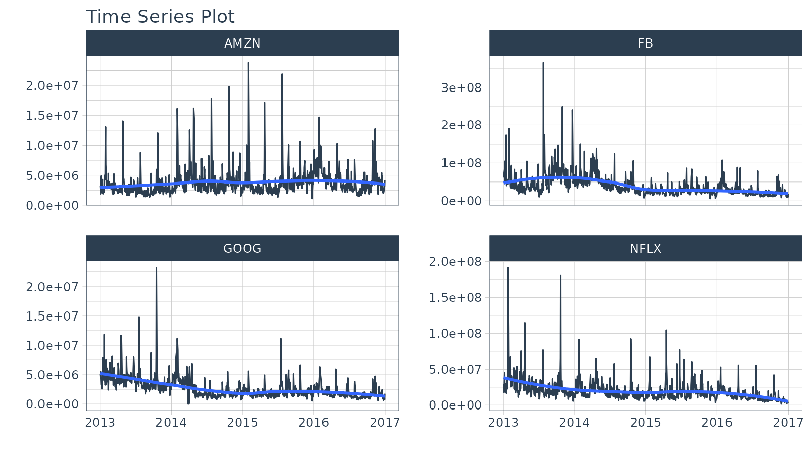
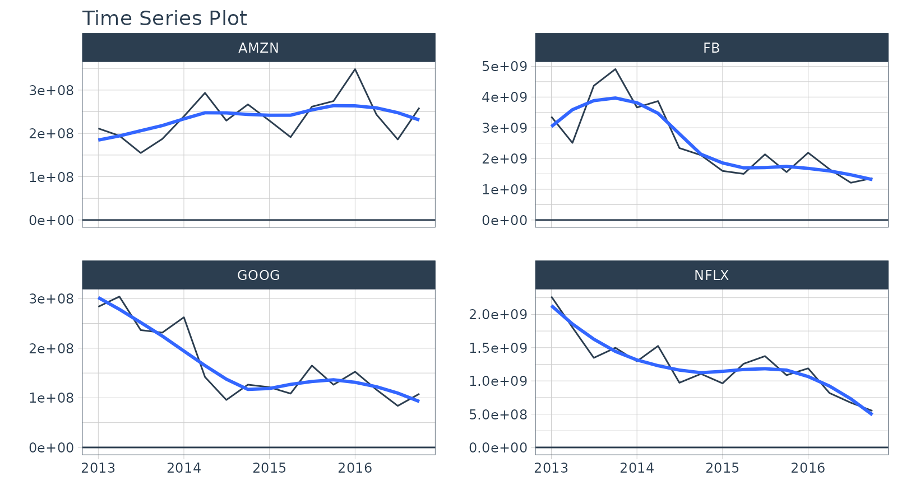
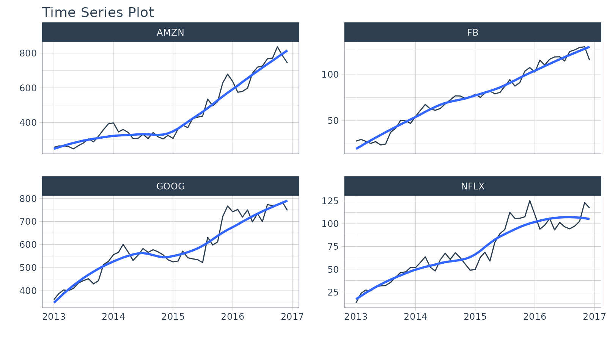
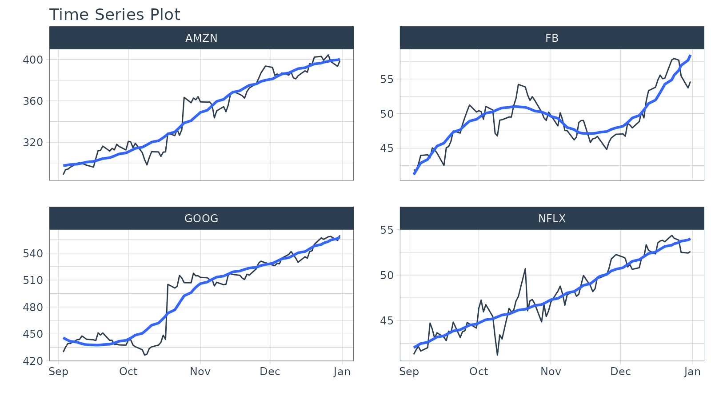
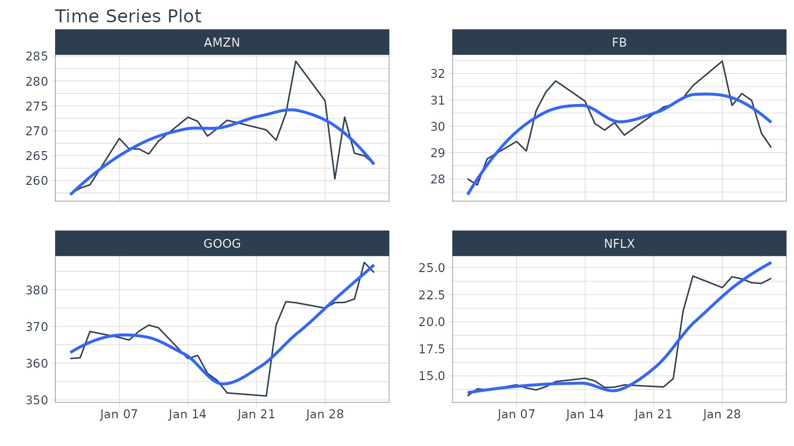
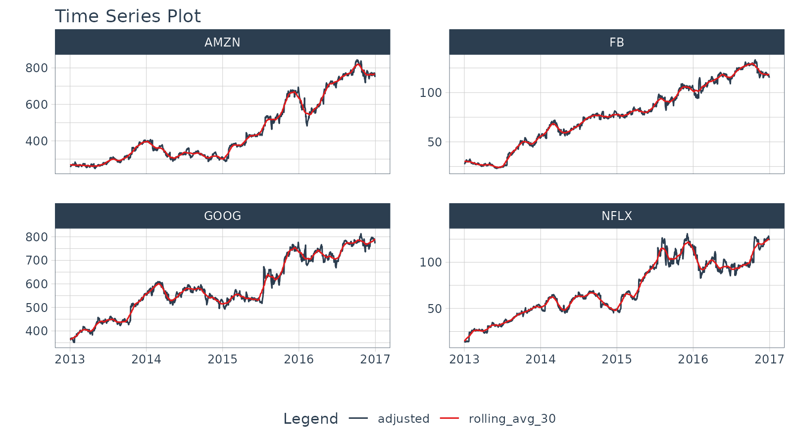

Time Series Data Wrangling
Matt Dancho
2023-10-31
Source:vignettes/temp_archive/TK07_Time_Series_Data_Wrangling.Rmd
TK07_Time_Series_Data_Wrangling.RmdTime series data wrangling is an essential skill for
any forecaster. timetk includes the essential data
wrangling tools. In this tutorial, we’ll cover:
- Summarise by Time - For time-based aggregations
- Filter by Time - For complex time-based filtering
- Pad by Time - For filling in gaps and going from low to high frequency
- Slidify - For turning any function into a sliding (rolling) function
Additional concepts covered:
- Imputation - Needed for Padding (See Low to High Frequency)
-
Advanced Filtering - Using the new add time
%+timeinfix operation (See Padding Data: Low to High Frequency) -
Visualization -
plot_time_series()for all visualizations
Data
This tutorial will use the FANG dataset:
- Daily
- Irregular (missing business holidays and weekends)
- 4 groups (FB, AMZN, NFLX, and GOOG).
FANG## # A tibble: 4,032 × 8
## symbol date open high low close volume adjusted
## <chr> <date> <dbl> <dbl> <dbl> <dbl> <dbl> <dbl>
## 1 FB 2013-01-02 27.4 28.2 27.4 28 69846400 28
## 2 FB 2013-01-03 27.9 28.5 27.6 27.8 63140600 27.8
## 3 FB 2013-01-04 28.0 28.9 27.8 28.8 72715400 28.8
## 4 FB 2013-01-07 28.7 29.8 28.6 29.4 83781800 29.4
## 5 FB 2013-01-08 29.5 29.6 28.9 29.1 45871300 29.1
## 6 FB 2013-01-09 29.7 30.6 29.5 30.6 104787700 30.6
## 7 FB 2013-01-10 30.6 31.5 30.3 31.3 95316400 31.3
## 8 FB 2013-01-11 31.3 32.0 31.1 31.7 89598000 31.7
## 9 FB 2013-01-14 32.1 32.2 30.6 31.0 98892800 31.0
## 10 FB 2013-01-15 30.6 31.7 29.9 30.1 173242600 30.1
## # ℹ 4,022 more rowsThe adjusted column contains the adjusted closing prices for each day.
FANG %>%
group_by(symbol) %>%
plot_time_series(date, adjusted, .facet_ncol = 2, .interactive = FALSE)
The volume column contains the trade volume (number of times the stock was transacted) for the day.
FANG %>%
group_by(symbol) %>%
plot_time_series(date, volume, .facet_ncol = 2, .interactive = FALSE)
Summarize by Time
summarise_by_time() aggregates by a period. It’s great
for:
Period Summarization
Objective: Get the total trade volume by quarter
- Use
sum() - Aggregate using
.by = "quarter"
FANG %>%
group_by(symbol) %>%
summarise_by_time(
date,
.by = "quarter",
volume = sum(volume)
) %>%
plot_time_series(date, volume, .facet_ncol = 2, .interactive = FALSE, .y_intercept = 0)
Period Smoothing
Objective: Get the first value in each month
- We can use
first()to get the first value, which has the effect of reducing the data (i.e. smoothing). We could usemean()ormedian(). - Use the summarization by time:
.by = "month"to aggregate by month.
FANG %>%
group_by(symbol) %>%
summarise_by_time(
date,
.by = "month",
adjusted = first(adjusted)
) %>%
plot_time_series(date, adjusted, .facet_ncol = 2, .interactive = FALSE)
Filter By Time
Used to quickly filter a continuous time range.
Time Range Filtering
Objective: Get the adjusted stock prices in the 3rd quarter of 2013.
-
.start_date = "2013-09": Converts to “2013-09-01 -
.end_date = "2013": Converts to “2013-12-31 - A more advanced example of filtering using
%+timeand%-timeis shown in “Padding Data: Low to High Frequency”.
FANG %>%
group_by(symbol) %>%
filter_by_time(date, "2013-09", "2013") %>%
plot_time_series(date, adjusted, .facet_ncol = 2, .interactive = FALSE)
Padding Data
Used to fill in (pad) gaps and to go from from low frequency to high
frequency. This function uses the awesome padr library for
filling and expanding timestamps.
Fill in Gaps
Objective: Make an irregular series regular.
- We will leave padded values as
NA. - We can add a value using
.pad_valueor we can impute using a function likets_impute_vec()(shown next).
FANG %>%
group_by(symbol) %>%
pad_by_time(date, .by = "auto") # Guesses .by = "day"## pad applied on the interval: day## # A tibble: 5,836 × 8
## # Groups: symbol [4]
## symbol date open high low close volume adjusted
## <chr> <date> <dbl> <dbl> <dbl> <dbl> <dbl> <dbl>
## 1 AMZN 2013-01-02 256. 258. 253. 257. 3271000 257.
## 2 AMZN 2013-01-03 257. 261. 256. 258. 2750900 258.
## 3 AMZN 2013-01-04 258. 260. 257. 259. 1874200 259.
## 4 AMZN 2013-01-05 NA NA NA NA NA NA
## 5 AMZN 2013-01-06 NA NA NA NA NA NA
## 6 AMZN 2013-01-07 263. 270. 263. 268. 4910000 268.
## 7 AMZN 2013-01-08 267. 269. 264. 266. 3010700 266.
## 8 AMZN 2013-01-09 268. 270. 265. 266. 2265600 266.
## 9 AMZN 2013-01-10 269. 269. 262. 265. 2863400 265.
## 10 AMZN 2013-01-11 265. 268. 264. 268. 2413300 268.
## # ℹ 5,826 more rowsLow to High Frequency
Objective: Go from Daily to Hourly timestamp intervals for 1 month from the start date. Impute the missing values.
-
.by = "hour"pads from daily to hourly - Imputation of hourly data is accomplished with
ts_impute_vec(), which performs linear interpolation whenperiod = 1. - Filtering is accomplished using:
- “start”: A special keyword that signals the start of a series
-
FIRST(date) %+time% "1 month": Selecting the first date in the sequence then using a special infix operation,%+time%, called “add time”. In this case I add “1 month”.
FANG %>%
group_by(symbol) %>%
pad_by_time(date, .by = "hour") %>%
mutate_at(vars(open:adjusted), .funs = ts_impute_vec, period = 1) %>%
filter_by_time(date, "start", first(date) %+time% "1 month") %>%
plot_time_series(date, adjusted, .facet_ncol = 2, .interactive = FALSE) 
Sliding (Rolling) Calculations
We have a new function, slidify() that turns any
function into a sliding (rolling) window function. It takes concepts
from tibbletime::rollify() and it improves them with the R
package slider.
Rolling Mean
Objective: Calculate a “centered” simple rolling average with partial window rolling and the start and end windows.
# Make the rolling function
roll_avg_30 <- slidify(.f = mean, .period = 30, .align = "center", .partial = TRUE)
# Apply the rolling function
FANG %>%
select(symbol, date, adjusted) %>%
group_by(symbol) %>%
# Apply Sliding Function
mutate(rolling_avg_30 = roll_avg_30(adjusted)) %>%
pivot_longer(cols = c(adjusted, rolling_avg_30)) %>%
plot_time_series(date, value, .color_var = name,
.facet_ncol = 2, .smooth = FALSE,
.interactive = FALSE)
For simple rolling calculations (rolling average), we can accomplish
this operation faster with slidify_vec() - A vectorized
rolling function for simple summary rolls (e.g. mean(),
sd(), sum(), etc)
FANG %>%
select(symbol, date, adjusted) %>%
group_by(symbol) %>%
# Apply roll apply Function
mutate(rolling_avg_30 = slidify_vec(adjusted, ~ mean(.),
.period = 30, .partial = TRUE))## # A tibble: 4,032 × 4
## # Groups: symbol [4]
## symbol date adjusted rolling_avg_30
## <chr> <date> <dbl> <dbl>
## 1 FB 2013-01-02 28 30.0
## 2 FB 2013-01-03 27.8 30.1
## 3 FB 2013-01-04 28.8 30.2
## 4 FB 2013-01-07 29.4 30.2
## 5 FB 2013-01-08 29.1 30.3
## 6 FB 2013-01-09 30.6 30.3
## 7 FB 2013-01-10 31.3 30.3
## 8 FB 2013-01-11 31.7 30.2
## 9 FB 2013-01-14 31.0 30.1
## 10 FB 2013-01-15 30.1 30.1
## # ℹ 4,022 more rowsRolling Regression
Objective: Calculate a rolling regression.
- This is a complex sliding (rolling) calculation that requires multiple columns to be involved.
-
slidify()is built for this. - Use the multi-variable
purrr..1,..2,..3, etc notation to setup a function
# Rolling regressions are easy to implement using `.unlist = FALSE`
lm_roll <- slidify(~ lm(..1 ~ ..2 + ..3), .period = 90,
.unlist = FALSE, .align = "right")
FANG %>%
select(symbol, date, adjusted, volume) %>%
group_by(symbol) %>%
mutate(numeric_date = as.numeric(date)) %>%
# Apply rolling regression
mutate(rolling_lm = lm_roll(adjusted, volume, numeric_date)) %>%
filter(!is.na(rolling_lm))## # A tibble: 3,676 × 6
## # Groups: symbol [4]
## symbol date adjusted volume numeric_date rolling_lm
## <chr> <date> <dbl> <dbl> <dbl> <list>
## 1 FB 2013-05-10 26.7 30847100 15835 <lm>
## 2 FB 2013-05-13 26.8 29068800 15838 <lm>
## 3 FB 2013-05-14 27.1 24930300 15839 <lm>
## 4 FB 2013-05-15 26.6 30299800 15840 <lm>
## 5 FB 2013-05-16 26.1 35499100 15841 <lm>
## 6 FB 2013-05-17 26.2 29462700 15842 <lm>
## 7 FB 2013-05-20 25.8 42402900 15845 <lm>
## 8 FB 2013-05-21 25.7 26261300 15846 <lm>
## 9 FB 2013-05-22 25.2 45314500 15847 <lm>
## 10 FB 2013-05-23 25.1 37663100 15848 <lm>
## # ℹ 3,666 more rowsLearning More
My Talk on High-Performance Time Series Forecasting
Time series is changing. Businesses now need 10,000+ time series forecasts every day.
High-Performance Forecasting Systems will save companies MILLIONS of dollars. Imagine what will happen to your career if you can provide your organization a “High-Performance Time Series Forecasting System” (HPTSF System).
I teach how to build a HPTFS System in my High-Performance Time Series Forecasting Course. If interested in learning Scalable High-Performance Forecasting Strategies then take my course. You will learn:
- Time Series Machine Learning (cutting-edge) with
Modeltime- 30+ Models (Prophet, ARIMA, XGBoost, Random Forest, & many more) - NEW - Deep Learning with
GluonTS(Competition Winners) - Time Series Preprocessing, Noise Reduction, & Anomaly Detection
- Feature engineering using lagged variables & external regressors
- Hyperparameter Tuning
- Time series cross-validation
- Ensembling Multiple Machine Learning & Univariate Modeling Techniques (Competition Winner)
- Scalable Forecasting - Forecast 1000+ time series in parallel
- and more.